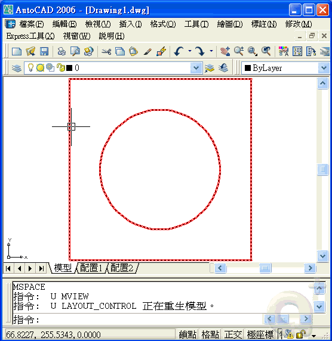

建立實體的輪廓方式
你可以使用 SOLPROF 指令 在圖紙空間中建立三維實體的輪廓影像，並可顯示建立隱藏輪廓線，
但是要現載入虛線的線型(如HIDDEN)，並調整適當的整體線型比例。
以下步驟你可能要多多練習，有問題請再提~
1.切換到「配置標籤」→「建立視埠(MVUEW指令」→「使用 MSPACE 指令」
2.切換至要建立的視圖(如東南等角) →「使用 UCS 指令」→「輸入 V」
3.「使用 SOLPROF 指令」→「選擇實體」→「按步驟建立」
4.「關閉3D實體圖層」→「剪下輪廓影像」→ →「使用 PSPACE 指令」
5.切換到「模型標籤」→「上視圖視角，貼上輪廓影像」...完成
※動態操作步驟如下:有問題請再提

PS:其他視角請重複以上步驟即可。至於其他細節作法請參考[F1]使用者說明
※AutoCAD 2007以上版本可以使用 平面快照 FLATSHOT指令。